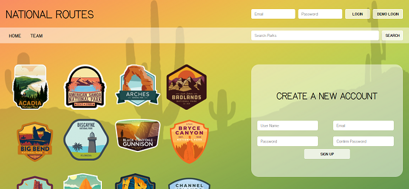
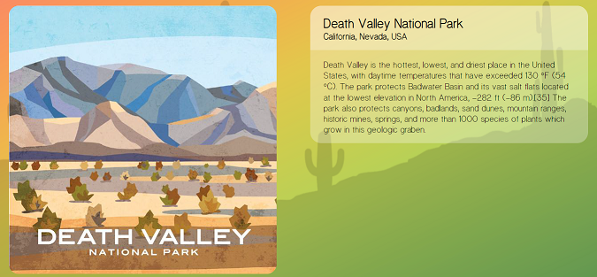
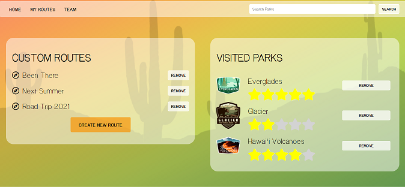

<div id="ajax-page" class="ajax-page-content">
    <div class="ajax-page-wrapper">
        <div class="ajax-page-nav">
            <div class="nav-item ajax-page-prev-next">
                <a class="ajax-page-load" href="portfolio-3.html"><i class="lnr lnr-chevron-left"></i></a>
                <a class="ajax-page-load" href="portfolio-2.html"><i class="lnr lnr-chevron-right"></i></a>
            </div>
            <div class="nav-item ajax-page-close-button">
                <a id="ajax-page-close-button" href="#"><i class="lnr lnr-cross"></i></a>
            </div>
        </div>

        <div class="ajax-page-title">
            <h1>National Routes</h1>
        </div>

        <div class="row">
            <div class="col-sm-8 col-md-8 portfolio-block">
                <div class="owl-carousel portfolio-page-carousel">
                    <div class="item">
                        
                    </div>
                    <div class="item">
                        
                    </div>
                    <div class="item">
                        
                    </div>
                </div>

                <script type="text/javascript">
                    jQuery(document).ready(function($){
                        $('.portfolio-page-carousel').imagesLoaded(function(){
                            $('.portfolio-page-carousel').owlCarousel({
                                smartSpeed:1200,
                                items: 1,
                                loop: true,
                                dots: true,
                                nav: true,
                                navText: false,
                                margin: 10,
                                autoHeight:true
                            });
                        });
                    });
                </script>
            </div>

            <div class="col-sm-4 col-md-4 portfolio-block">
                <!-- Project Description -->
                <div class="project-description">
                    <div class="block-title">
                        <h3>Description</h3>
                    </div>
                    <ul class="project-general-info">
                        <li><p><i class="fa fa-user"></i>Anna Bullard, Erick Bravo, Kristen Florey, Thanh Nguyen</p></li>
                        <li><p><i class="fa fa-globe"></i> <a href="https://national-routes-app.herokuapp.com/" target="_blank">Live</a></p></li>
                        <li><p><i class="fab fa-github"></i> <a href="https://github.com/Erick-Bravo/National-Routes" target="_blank">Repo</a></p></li>
                    </ul>

                    <p class="text-justify">National Routes is a clone of GoodReads to support hikers and travelers love for nature in the United States. It will allow users to see what National Park is in their neck of the woods and create their own routes for future visits. Once they're done, they can rate and review that experience for others to see.</p>
                    <!-- /Project Description -->

                    <!-- Technology -->
                    <div class="tags-block">
                        <div class="block-title">
                            <h3>Technology</h3>
                        </div>
                        <ul class="tags">
                            <li><a>JavaScript</a></li>
                            <li><a>ExpressJS</a></li>
                            <li><a>PostgeSQL</a></li>
                            <li><a>Pug</a></li>
                            <li><a>Sequelize</a></li>
                        </ul>
                    </div>
                    <!-- /Technology -->

                </div>
                <!-- Project Description -->
            </div>
        </div>
    </div>
</div>
